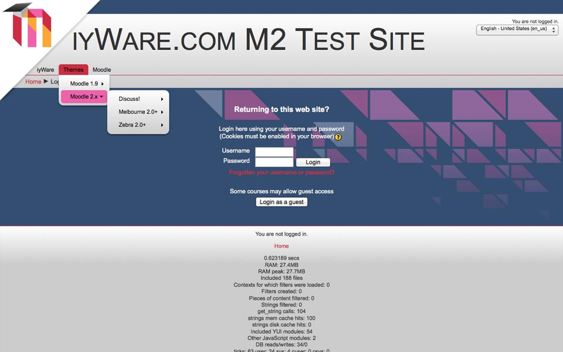
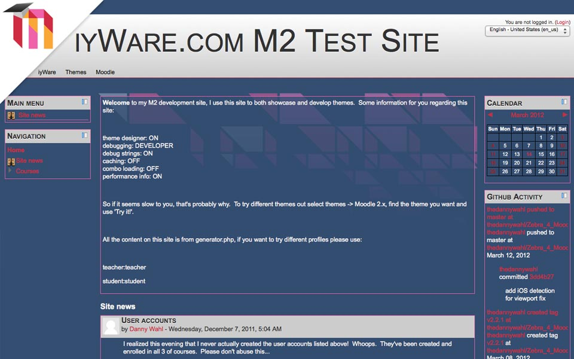
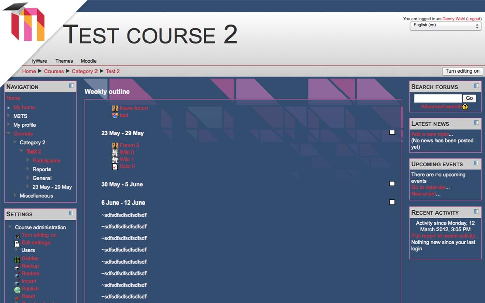

Melbourne 2
Melbourne 2 picks up where the original Melbourne theme left off. This is a light-weight, CSS3-based theme for Moodle 2. Since the underlying framework between Moodle 1.9 and Moodle 2 is so different this theme is more rewrite than port, but maintains the same look and feel as the original.
Features
- Melbourne leverages advanced styling techniques via CSS3 for users with modern browsers
- Melbourne uses progressive enhancement, so users with older browsers aren’t left behind
- Valid XHTML 1.0 means that Melbourne works seamlessly with Moodle
- Vendor prefixes make sure that Melbourne displays properly for any user
Gallery
  
Download
This theme is available for download from the Moodle plugins directory or github.
Documentation & Support
Support for this theme is provided at the Moodle.org forums.